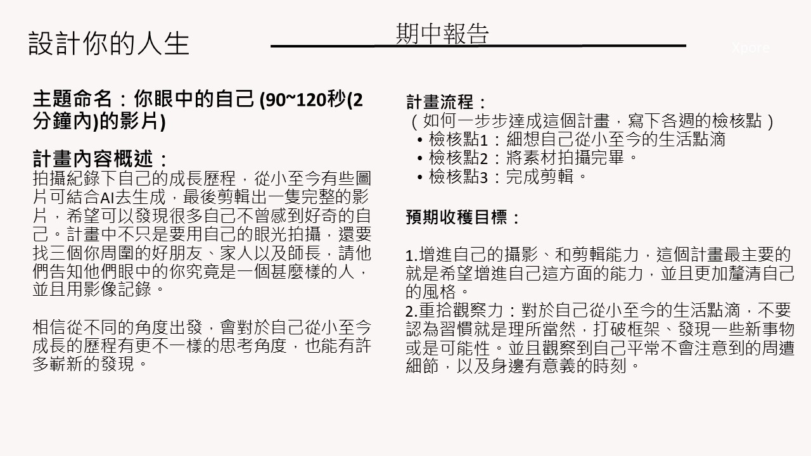

Step 1 · 影片製作內容說明
上傳影片製作內容說明檔案
支援上傳 圖檔 (.jpg, .png, .webp)、Word 檔 (.docx) 或 PDF 檔 (.pdf)，系統會自動解析內容作為評分依據。
設計思考期中影片製作說明.jpg (預設載入)
IMAGE

當上傳 Word/PDF 時會自動提取文字；若上傳圖檔，可透過 AI 視覺辨識或直接於下方確認與修改製作要求（如片長規定、必備訪談人數、主題方向等）。
評分檢核重點：
主題：你眼中的自己
規範片長：90~120秒 (2分鐘內)
必備元素：成長歷程 + 3位親友師長訪談
核心目標：自我覺察與突破框架